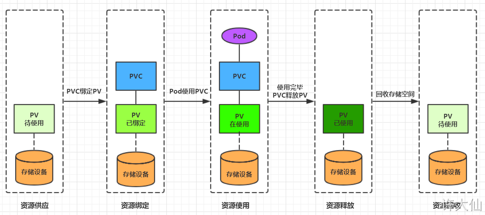

概述 在前面已经提到，容器的生命周期可能很短，会被频繁的创建和销毁。
Volume是Pod中能够被多个容器访问的共享目录，它被定义在Pod上，然后被一个Pod里面的多个容器挂载到具体的文件目录下，kubernetes通过Volume实现同一个Pod中不同容器之间的数据共享以及数据的持久化存储。
kubernetes的Volume支持多种类型，比较常见的有下面的几个：
简单存储：EmptyDir、HostPath、NFS。
高级存储：PV、PVC。
配置存储：ConfigMap、Secret。
基本存储 EmptyDir 概述
EmptyDir是最基础的Volume类型，一个EmptyDir就是Host上的一个空目录。
EmptyDir是在Pod被分配到Node时创建的，它的初始内容为空，并且无须指定宿主机上对应的目录文件，因为kubernetes会自动分配一个目录，当Pod销毁时，EmptyDir中的数据也会被永久删除。
EmptyDir的用途如下：
临时空间，例如用于某些应用程序运行时所需的临时目录，且无须永久保留
一个容器需要从另一个容器中获取数据的目录（多容器共享目录）
接下来，通过一个容器之间的共享案例来使用描述一个EmptyDir。
示例 创建volume-emptydir.yaml文件，内容如下：
1 2 3 4 5 6 7 8 9 10 11 12 13 14 15 16 17 18 19 20 21 22 23 24 25 apiVersion: v1 kind: Pod metadata: name: volume-emptydir namespace: dev spec: containers: - name: nginx image: nginx:1.17.1 imagePullPolicy: IfNotPresent ports: - containerPort: 80 volumeMounts: - name: logs-volume mountPath: /var/log/nginx - name: busybox image: busybox:1.30 imagePullPolicy: IfNotPresent command: ["/bin/sh" ,"-c" ,"tail -f /logs/access.log" ] volumeMounts: - name: logs-volume mountPath: /logs volumes: - name: logs-volume emptyDir: {}
1 2 3 4 5 6 7 kubectl create -f volume-emptydir.yaml # 查看 kubectl get pod volume-emptydir -n dev -o wide # 查看日志 kubectl logs -f volume-emptydir -n dev -c busybox
这时访问nginx服务，上面的日志就有输出
HostPath 概述 我们已经知道EmptyDir中的数据不会被持久化，它会随着Pod的结束而销毁，如果想要简单的将数据持久化到主机中，可以选择HostPath。
示例 创建volume-hostpath.yaml文件，内容如下：
1 2 3 4 5 6 7 8 9 10 11 12 13 14 15 16 17 18 19 20 21 22 23 24 25 26 27 apiVersion: v1 kind: Pod metadata: name: volume-hostpath namespace: dev spec: containers: - name: nginx image: nginx:1.17.1 imagePullPolicy: IfNotPresent ports: - containerPort: 80 volumeMounts: - name: logs-volume mountPath: /var/log/nginx - name: busybox image: busybox:1.30 imagePullPolicy: IfNotPresent command: ["/bin/sh" ,"-c" ,"tail -f /logs/access.log" ] volumeMounts: - name: logs-volume mountPath: /logs volumes: - name: logs-volume hostPath: path: /root/logs type: DirectoryOrCreate
type的值的说明：
DirectoryOrCreate：目录存在就使用，不存在就先创建后使用。
Directory：目录必须存在。
FileOrCreate：文件存在就使用，不存在就先创建后使用。
File：文件必须存在。
Socket：unix套接字必须存在。
CharDevice：字符设备必须存在。
BlockDevice：块设备必须存在。
示例 1 2 3 kubectl create -f volume-hostpath.yaml kubectl get pod volume-hostpath -n dev -o wide
在相应的node节点上可以看的容器内的日志。
NFS 概述 HostPath虽然可以解决数据持久化的问题，但是一旦Node节点故障了，Pod如果转移到别的Node节点上，又会出现问题，此时需要准备单独的网络存储系统，比较常用的是NFS和CIFS。
搭建NFS服务器 首先需要准备NFS服务器，这里为了简单，直接在Master节点做NFS服务器。
1 2 3 4 5 6 7 8 9 10 11 12 13 14 15 16 17 18 19 20 21 22 23 yum install -y nfs-utils rpcbind # mkdir -pv /root/data/nfsmkdir -pv /root/data/nfs # 将共享目录以读写权限暴露给192.168.18.0/24网段中的所有主机 # /root/data/nfs 192.168.18.0/24(rw,no_root_squash) vim /etc/exports # 修改权限 chmod 777 -R /root/data/nfs # 加载配置 exportfs -r # 启动nfs服务 systemctl start rpcbind systemctl enable rpcbind systemctl start nfs systemctl enable nfs # 在Master节点测试是否挂载成功 showmount -e 192.168.18.100
在Node节点上都安装NFS服务器，目的是为了Node节点可以驱动NFS设备。
1 2 3 4 5 # 在Node节点上安装NFS服务，不需要启动 yum -y install nfs-utils # 在Node节点测试是否挂载成功 showmount -e 192.168.18.100
高可用备份方式，在所有节点执行如下的命令
1 mount -t nfs 192.168.18.100:/root/data/nfs /mnt
示例 1 2 3 4 5 6 7 8 9 10 11 12 13 14 15 16 17 18 19 20 21 22 23 24 25 26 27 apiVersion: v1 kind: Pod metadata: name: volume-nfs namespace: dev spec: containers: - name: nginx image: nginx:1.17.1 imagePullPolicy: IfNotPresent ports: - containerPort: 80 volumeMounts: - name: logs-volume mountPath: /var/log/nginx - name: busybox image: busybox:1.30 imagePullPolicy: IfNotPresent command: ["/bin/sh" ,"-c" ,"tail -f /logs/access.log" ] volumeMounts: - name: logs-volume mountPath: /logs volumes: - name: logs-volume nfs: server: 192.168 .18 .100 path: /root/data/nfs
1 2 3 4 5 6 7 kubectl create -f volume-nfs.yaml # 查看 kubectl get pod volume-nfs -n dev # 查看nfs服务器上共享目录 ls /root/data/nfs
高级存储 PV和PVC概述 前面我们已经学习了使用NFS提供存储，此时就要求用户会搭建NFS系统，并且会在yaml配置nfs。
PV（Persistent Volume）是持久化卷的意思，是对底层的共享存储的一种抽象。
PVC（Persistent Volume Claim）是持久化卷声明的意思，是用户对于存储需求的一种声明。
存储：存储工程师维护
PV：kubernetes管理员维护
PVC：kubernetes用户维护
PV PV的资源清单文件 PV是存储资源的抽象，下面是PV的资源清单文件:
1 2 3 4 5 6 7 8 9 10 11 12 13 14 apiVersion: v1 kind: PersistentVolume metadata: name: pv2 spec: nfs: path: server: capacity: storage: 2Gi accessModes: - storageClassName: persistentVolumeReclaimPolicy:
pv的关键配置参数说明：
存储类型：底层实际存储的类型，kubernetes支持多种存储类型，每种存储类型的配置有所不同
存储能力（capacity）：目前只支持存储空间的设置（storage=1Gi），不过未来可能会加入IOPS、吞吐量等指标的配置
访问模式（accessModes），用来描述用户应用对存储资源的访问权限，访问权限包括下面几种方式：
ReadWriteOnce（RWO）：读写权限，但是只能被单个节点挂载
ReadOnlyMany（ROX）：只读权限，可以被多个节点挂载
ReadWriteMany（RWX）：读写权限，可以被多个节点挂载
需要注意的是，底层不同的存储类型可能支持的访问模式不同
回收策略（ persistentVolumeReclaimPolicy），当PV不再被使用之后，对其的处理方式，目前支持三种策略：
Retain（保留）：保留数据，需要管理员手动清理数据
Recycle（回收）：清除PV中的数据，效果相当于rm -rf /volume/*
Delete（删除）：和PV相连的后端存储完成volume的删除操作，常见于云服务器厂商的存储服务
需要注意的是，底层不同的存储类型可能支持的回收策略不同
存储类别（storageClassName）：PV可以通过storageClassName参数指定一个存储类别
具有特定类型的PV只能和请求了该类别的PVC进行绑定
未设定类别的PV只能和不请求任何类别的PVC进行绑定
状态（status）：一个PV的生命周期，可能会处于4种不同的阶段
Available（可用）：表示可用状态，还未被任何PVC绑定
Bound（已绑定）：表示PV已经被PVC绑定
Released（已释放）：表示PVC被删除，但是资源还没有被集群重新释放
Failed（失败）：表示该PV的自动回收失败
准备NFS环境 1 2 3 4 5 6 7 8 9 10 11 12 13 14 # 创建目录 mkdir -pv /root/data/{pv1,pv2,pv3} # 授权 chmod 777 -R /root/data # 修改/etc/exports文件 # /root/data/pv1 192.168.18.0/24(rw,no_root_squash) # /root/data/pv2 192.168.18.0/24(rw,no_root_squash) # /root/data/pv3 192.168.18.0/24(rw,no_root_squash) vim /etc/exports # 重启nfs服务 systemctl restart nfs
创建PV 创建pv.yaml文件，内容如下：
1 2 3 4 5 6 7 8 9 10 11 12 13 14 15 16 17 18 19 20 21 22 23 24 25 26 27 28 29 30 31 32 33 34 35 36 37 38 39 40 41 42 43 apiVersion: v1 kind: PersistentVolume metadata: name: pv1 spec: nfs: path: /root/data/pv1 server: 192.168 .18 .100 capacity: storage: 1Gi accessModes: - ReadWriteMany persistentVolumeReclaimPolicy: Retain --- apiVersion: v1 kind: PersistentVolume metadata: name: pv2 spec: nfs: path: /root/data/pv2 server: 192.168 .18 .100 capacity: storage: 2Gi accessModes: - ReadWriteMany persistentVolumeReclaimPolicy: Retain --- apiVersion: v1 kind: PersistentVolume metadata: name: pv3 spec: nfs: path: /root/data/pv3 server: 192.168 .18 .100 capacity: storage: 3Gi accessModes: - ReadWriteMany persistentVolumeReclaimPolicy: Retain
1 2 3 4 kubectl create -f pv.yaml # 查看PV kubectl get pv -o wide
PVC PVC的资源清单文件 PVC是资源的申请，用来声明对存储空间、访问模式、存储类别需求信息，下面是PVC的资源清单文件：
1 2 3 4 5 6 7 8 9 10 11 12 13 apiVersion: v1 kind: PersistentVolumeClaim metadata: name: pvc namespace: dev spec: accessModes: - selector: storageClassName: resources: requests: storage: 5Gi
PVC的关键配置参数说明：
访客模式（accessModes）：用于描述用户应用对存储资源的访问权限
用于描述用户应用对存储资源的访问权限：
选择条件（selector）：通过Label Selector的设置，可使PVC对于系统中已存在的PV进行筛选
存储类别（storageClassName）：PVC在定义时可以设定需要的后端存储的类别，只有设置了该class的pv才能被系统选出
资源请求（resources）：描述对存储资源的请求
创建PVC 创建pvc.yaml文件，内容如下：
1 2 3 4 5 6 7 8 9 10 11 12 13 14 15 16 17 18 19 20 21 22 23 24 25 26 27 28 29 30 31 32 33 34 35 36 37 apiVersion: v1 kind: PersistentVolumeClaim metadata: name: pvc1 namespace: dev spec: accessModes: - ReadWriteMany resources: requests: storage: 1Gi --- apiVersion: v1 kind: PersistentVolumeClaim metadata: name: pvc2 namespace: dev spec: accessModes: - ReadWriteMany resources: requests: storage: 1Gi --- apiVersion: v1 kind: PersistentVolumeClaim metadata: name: pvc3 namespace: dev spec: accessModes: - ReadWriteMany resources: requests: storage: 5Gi
1 2 3 4 5 6 7 kubectl create -f pvc.yaml # 查看PVC kubectl get pvc -n dev -o wide # 查看PV kubectl get pv -o wide
创建Pod使用PVC 创建pvc-pod.yaml文件，内容如下：
1 2 3 4 5 6 7 8 9 10 11 12 13 14 15 16 17 18 19 20 21 22 23 24 25 26 27 28 29 30 31 32 33 34 35 36 37 38 apiVersion: v1 kind: Pod metadata: name: pod1 namespace: dev spec: containers: - name: busybox image: busybox:1.30 command: ["/bin/sh" ,"-c" ,"while true;do echo pod1 >> /root/out.txt; sleep 10; done;" ] volumeMounts: - name: volume mountPath: /root/ volumes: - name: volume persistentVolumeClaim: claimName: pvc1 readOnly: false --- apiVersion: v1 kind: Pod metadata: name: pod2 namespace: dev spec: containers: - name: busybox image: busybox:1.30 command: ["/bin/sh" ,"-c" ,"while true;do echo pod1 >> /root/out.txt; sleep 10; done;" ] volumeMounts: - name: volume mountPath: /root/ volumes: - name: volume persistentVolumeClaim: claimName: pvc2 readOnly: false
1 2 3 4 5 6 7 8 9 10 11 12 13 14 kubectl create -f pvc-pod.yaml # 查看Pod kubectl get pod -n dev -o wide # 创建Pod使用PVC后查看PVC kubectl get pvc -n dev -o wide # 创建Pod使用PVC后查看PV kubectl get pv -n dev -o wide # 查看nfs中的文件存储 ls /root/data/pv1/out.txt ls /root/data/pv2/out.txt
生命周期 
资源供应：管理员手动创建底层存储和PV
资源绑定:
用户创建PVC，kubernetes负责根据PVC声明去寻找PV，并绑定在用户定义好PVC之后，系统将根据PVC对存储资源的请求在以存在的PV中选择一个满足条件的
一旦找到，就将该PV和用户定义的PVC进行绑定，用户的应用就可以使用这个PVC了
如果找不到，PVC就会无限期的处于Pending状态，直到系统管理员创建一个符合其要求的PV
PV一旦绑定到某个PVC上，就会被这个PVC独占，不能再和其他的PVC进行绑定了
资源使用：用户可以在Pod中像volume一样使用PVC，Pod使用Volume的定义，将PVC挂载到容器内的某个路径进行使用
资源释放:
用户删除PVC来释放PV
当存储资源使用完毕后，用户可以删除PVC，和该PVC绑定的PV将会标记为“已释放”，但是还不能立刻和其他的PVC进行绑定。通过之前PVC写入的数据可能还留在存储设备上，只有在清除之后该PV才能再次使用。
资源回收:
kubernetes根据PV设置的回收策略进行资源的回收
对于PV，管理员可以设定回收策略，用于设置与之绑定的PVC释放资源之后如何处理遗留数据的问题。只有PV的存储空间完成回收，才能供新的PVC绑定和使用
创建PVC后一直绑定不了PV的原因
PVC的空间申请大小比PV的空间要大
PVC的storageClassName和PV的storageClassName不一致
PVC的accessModes和PV的accessModes不一致
配置存储 ConfigMap 概述 ConfigMap是一个比较特殊的存储卷，它的主要作用是用来存储配置信息的
ConfigMap的资源清单文件 ConfigMap的资源清单文件
1 2 3 4 5 6 7 apiVersion: v1 kind: ConfigMap metadata: name: configMap namespace: dev data: xxx
创建ConfigMap 创建configmap.yaml文件，内容如下
1 2 3 4 5 6 7 8 9 apiVersion: v1 kind: ConfigMap metadata: name: configmap namespace: dev data: info: username:admin password:123456
1 kubectl create -f configmap.yaml
创建Pod 创建pod-configmap.yaml文件，内容如下：
1 2 3 4 5 6 7 8 9 10 11 12 13 14 15 16 apiVersion: v1 kind: Pod metadata: name: pod-configmap namespace: dev spec: containers: - name: nginx image: nginx:1.17.1 volumeMounts: - mountPath: /configmap/config name: config volumes: - name: config configMap: name: configmap
1 2 3 4 5 6 7 8 9 kubectl create -f pod-configmap.yaml # 查看Pod kubectl get pod pod-configmap -n dev # 进入容器，查看配置 kubectl exec -it pod-configmap -n dev /bin/sh cd /configmap/config more info
ConfigMap中的key映射为一个文件，value映射为文件中的内容。如果更新了ConfigMap中的内容，容器中的值也会动态更新。
Secret 概述 在kubernetes中，还存在一种和ConfigMap非常类似的对象，称为Secret对象，它主要用来存储敏感信息，例如密码、密钥、证书等等
准备数据 1 2 3 # 使用base64 对数据进行编码 echo -n "admin" | base64 echo -n "123456" | base64
创建Secret 创建secret.yaml文件，内容如下：
1 2 3 4 5 6 7 8 9 apiVersion: v1 kind: Secret metadata: name: secret namespace: dev type: Opaque data: username: YWRtaW4= password: MTIzNDU2
1 kubectl create -f secret.yaml
上面的方式是先手动将数据进行编码，其实也可以使用直接编写数据，将数据编码交给kubernetes
1 2 3 4 5 6 7 8 9 apiVersion: v1 kind: Secret metadata: name: secret namespace: dev type: Opaque stringData: username: admin password: 123456
如果同时使用data和stringData，那么data会被忽略
查看Secret详情 1 kubectl describe secret secret -n dev
创建Pod 创建pod-secret.yaml文件，内容如下：
1 2 3 4 5 6 7 8 9 10 11 12 13 14 15 16 apiVersion: v1 kind: Pod metadata: name: pod-secret namespace: dev spec: containers: - name: nginx image: nginx:1.17.1 volumeMounts: - mountPath: /secret/config name: config volumes: - name: config secret: secretName: secret
1 2 3 4 5 6 7 8 9 10 kubectl create -f pod-secret.yaml # 查看pod kubectl get pod pod-secret -n dev # 进入容器，查看secret信息，发现已经自动解码了 kubectl exec -it pod-secret -n dev /bin/sh ls /secret/config more /secret/config/username more /secret/config/password
Secret的用途 imagePullSecret：Pod拉取私有镜像仓库的时使用的账户密码，会传递给kubelet，然后kubelet就可以拉取有密码的仓库里面的镜像
1 2 3 4 5 6 kubectl create secret docker-registry docker-harbor-registrykey --docker-server=192.168.18.119:85 \ --docker-username=admin --docker-password=Harbor12345 \ --docker-email=1900919313@qq.com # 查看是否创建成功 kubectl get secret docker-harbor-registrykey
新建redis.yaml文件，内容如下：
1 2 3 4 5 6 7 8 9 10 apiVersion: v1 kind: Pod metadata: name: redis spec: containers: - name: redis image: 192.168 .18 .119 :85/yuncloud/redis imagePullSecrets: - name: docker-harbor-registrykey
1 kubectl apply -f redis.yaml
ConfigMap高级 概述 在ConfigMap基础中，我们已经可以实现创建ConfigMap了，但是如果实际工作中这样使用，就会显得很繁琐
ConfigMap 在设计上不是用来保存大量数据的。在 ConfigMap 中保存的数据不可超过 1 MiB。
如果需要保存超出此尺寸限制的数据，需要考虑挂载存储卷或者使用独立的数据库或者文件服务。
1 2 # 语法 kubectl create configmap <map-name> <data-source>
从一个目录中创建ConfigMap 1 2 3 4 5 6 7 8 9 mkdir -pv configure-pod-container/configmap/ wget https://kubernetes.io/examples/configmap/game.properties -O configure-pod-container/configmap/game.properties wget https://kubernetes.io/examples/configmap/ui.properties -O configure-pod-container/configmap/ui.properties kubectl create configmap cm1 --from-file=configure-pod-container/configmap/ kubectl get cm cm1 -o yaml
从一个文件中创建ConfigMap 1 2 3 4 5 6 mkdir -pv configure-pod-container/configmap/ wget https://kubernetes.io/examples/configmap/game.properties -O configure-pod-container/configmap/game.properties # 默认情况下的key的名称是文件的名称 kubectl create configmap cm2 --from-file=configure-pod-container/configmap/game.properties
从一个文件中创建ConfigMap，并自定义ConfigMap中key的名称 1 2 3 4 5 mkdir -pv configure-pod-container/configmap/ wget https://kubernetes.io/examples/configmap/game.properties -O configure-pod-container/configmap/game.properties kubectl create configmap cm3 --from-file=cm3=configure-pod-container/configmap/game.properties
从环境变量文件创建ConfigMap 1 2 3 4 5 6 7 8 9 10 11 12 13 vim configure-pod-container/configmap/env-file.properties # 语法规则: # env 文件中的每一行必须为 VAR = VAL 格式。 # 以＃开头的行(即注释)将被忽略。 # 空行将被忽略。 # 引号没有特殊处理(即它们将成为 ConfigMap 值的一部分) enemies=aliens lives=3 allowed="true" kubectl create cm cm4 --from-env-file=configure-pod-container/configmap/env-file.properties
注意：当--from-env-file从多个数据源创建ConfigMap的时候，仅仅最后一个env文件有效。
在命令行根据键值对创建ConfigMap 1 kubectl create configmap cm5 --from-literal=special.how=very --from-literal=special.type=charm
使用ConfigMap定义容器环境变量 1 kubectl create configmap cm6 --from-literal=special.how=very --from-literal=special.type=charm
1 2 3 4 5 6 7 8 9 10 11 12 13 14 15 16 17 18 19 20 apiVersion: v1 kind: Pod metadata: name: test-pod spec: containers: - name: test-container image: busybox command: [ "/bin/sh" , "-c" , "env" ] env: - name: SPECIAL_LEVEL_KEY valueFrom: configMapKeyRef: name: cm6 key: special.how restartPolicy: Never
1 kubectl apply -f test-pod.yaml
将 ConfigMap 中的所有键值对配置为容器环境变量 1 kubectl create configmap cm7 --from-literal=special.how=very --from-literal=special.type=charm
1 2 3 4 5 6 7 8 9 10 11 12 13 14 apiVersion: v1 kind: Pod metadata: name: test-pod spec: containers: - name: test-container image: busybox command: [ "/bin/sh" , "-c" , "env" ] envFrom: - configMapRef: name: cm7 restartPolicy: Never
1 kubectl apply -f test-pod.yaml
使用存储在 ConfigMap 中的数据填充容器 1 kubectl create configmap cm8 --from-literal=special.how=very --from-literal=special.type=charm
1 2 3 4 5 6 7 8 9 10 11 12 13 14 15 16 17 18 19 apiVersion: v1 kind: Pod metadata: name: test-pod spec: containers: - name: test-container image: busybox command: [ "/bin/sh" , "-c" , "ls /etc/config/" ] volumeMounts: - name: config-volume mountPath: /etc/config volumes: - name: config-volume configMap: name: cm8 restartPolicy: Never
Secret高级 略（和ConfigMap高级类似）
ConfigMap&&Secret使用SubPath解决目录覆盖问题 ConfigMap和Secret在进行目录挂载的时候会覆盖目录，我们可以使用SubPath解决这个问题
示例 1 2 3 4 5 6 7 8 9 10 # 创建一个Pod kubectl run nginx --image=nginx:1.17.1 # 将nginx.conf导出到本地 kubectl exec -it nginx -- cat /etc/nginx/nginx.conf > nginx.conf # 创建ConfigMap kubectl create cm nginx-conf --from-file=nginx.conf kubectl delete pod nginx
1 2 3 4 5 6 7 8 9 10 11 12 13 14 15 16 17 18 19 20 apiVersion: v1 kind: Pod metadata: name: nginx spec: containers: - name: nginx image: nginx:1.17.1 command: [ "/bin/sh" , "-c" , "sleep 3600" ] volumeMounts: - name: nginx-conf mountPath: /etc/nginx volumes: - name: nginx-conf configMap: name: nginx-conf restartPolicy: Never
1 2 3 kubectl apply -f nginx.yaml kubectl exec -it nginx -- ls /etc/nginx
1 2 3 4 5 6 7 8 9 10 11 12 13 14 15 16 17 18 19 20 21 22 23 24 apiVersion: v1 kind: Pod metadata: name: nginx spec: containers: - name: nginx image: nginx:1.17.1 command: [ "/bin/sh" , "-c" , "sleep 3600" ] volumeMounts: - name: nginx-conf mountPath: /etc/nginx/nginx.conf subPath: nginx.conf volumes: - name: nginx-conf configMap: name: nginx-conf items: - key: nginx.conf path: nginx.conf restartPolicy: Never
1 2 3 kubectl apply -f nginx.yaml kubectl exec -it nginx -- ls /etc/nginx
ConfigMap&&Secret的热更新 注意事项：
如果ConfigMap和Secret是以subPath的形式挂载的，那么Pod是不会感知到ConfigMap和Secret的更新的
如果Pod的变量来自ConfigMap和Secret中定义的内容，那么ConfigMap和Secret更新后，也不会更新Pod中的变量